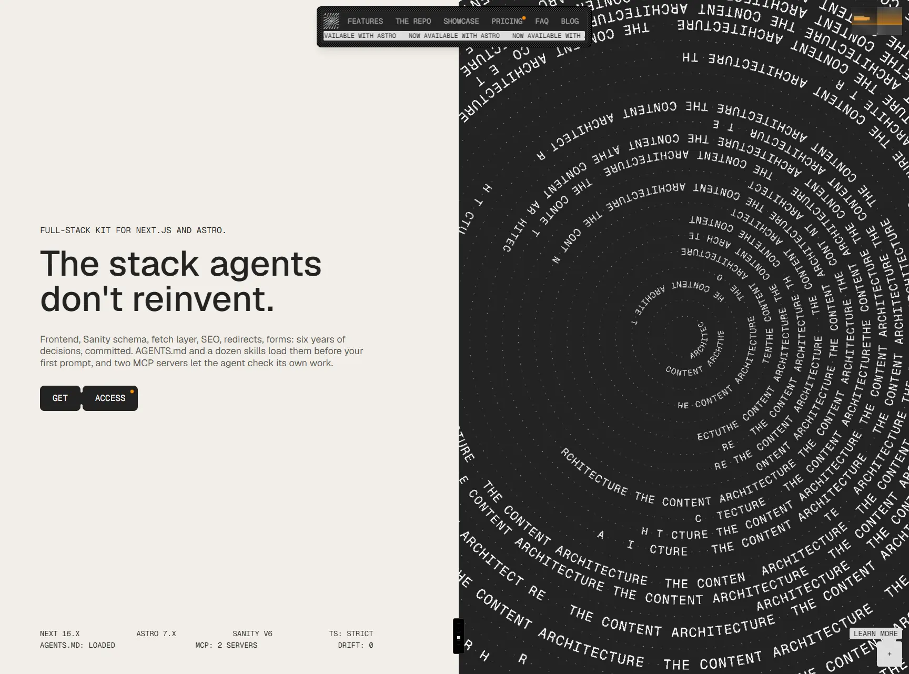

The Content Architecture
- Сервисы и приложения
- Инструменты разработчика
- Брутализм
- Утилитарный техно
- Швейцарская типографика
- Сайт жив

Что это
Лендинг набора исходников для сборки сайтов на Next.js и Astro с headless-CMS Sanity; продаётся двумя редакциями за 549 €. Главный визуальный аттракцион — интерактивная спираль из повторяющегося названия и ASCII-превью кейсов. Шикарно оформленный сайт готового набора для разработки сайтов на Next.js или Astro с CMS Sanity. Очень оригинальные интерактивные шейдеры с текстом.
Что смотреть в первую очередь
Смотреть как пример интерактивной графики с текстом: спираль собрана на WebGL2 собственными шейдерами поверх текстового атласа, а не библиотекой эффектов. Отдельно поучительна «агентная» часть — Markdown по тому же адресу, llms.txt, openapi.json и правила для AI-краулеров.
Чем интересен
- Спираль из повторяющегося текста сделана не готовой библиотекой и не обычным холстом: текст сначала рисуется в скрытом холсте, затем уходит на видеокарту текстурой и выводится тридцатью кольцами собственными шейдерами — маленькими программами для видеокарты.
- Сцена действительно интерактивна: удержание кнопки заряжает кольца с дрожанием, отпускание запускает волну, а курсор растворяет буквы в точки.
- Сайт сделан «читаемым для агентов», и это проверяется машинно: любая страница отдаёт упрощённый Markdown, если запросить её с заголовком Accept: text/markdown, а рядом лежат llms.txt и описание API в openapi.json.
- В robots.txt объявлена политика использования контента: поисковым роботам можно, обучению ИИ — нельзя. Это редкий для сайтов случай, когда правило прописано явно и с комментарием.
- Вся растровая графика заменена ASCII-рисунками: тринадцать холстов с подписями для программ чтения с экрана, плюс полноэкранная ASCII-«занавесь» при переходе между страницами.
- Заявление продукта про React Compiler подтверждается на самом сайте: в собранных файлах 114 служебных меток компилятора.
- Ссылка «Imprint» в подвале ведёт на несуществующую страницу — 404, и в карте сайта её тоже нет.
Паспорт
- Домен
- contentarchitecture.dev
- Тип сайта
- Лендинг
- Категории
- Сервисы и приложения
- Подкатегории
- Инструменты разработчика
- Для кого
- Разработчикам, Агентствам, Дизайнерам
- Стиль
- Брутализм, Утилитарный техно, Швейцарская типографика
- Язык
- Английский
- Страна
- Австрия, Вена
- Автор
- Edoardo Lunardi — частный разработчик
- Год
- 2026
- Добавлен в коллекцию
- 30.09.2026
Палитра
-
#F2EEE9— 49% кадра -
#242424— 45% кадра -
#4E4E4E— 2% кадра -
#C1C1C0— 1% кадра -
#6F6F6F— 1% кадра
- Режим
- Светлая
- Цвет фона
- Нейтральный
Технологии
- Next.js 16.3.4 (App Router)
- React Compiler
- Sanity (headless CMS) и Live Content API
- Tailwind CSS v4
- OGL (минималистичная WebGL-библиотека)
- WebGL2 и собственные GLSL ES 3.00 шейдеры
- Canvas 2D для ASCII-графики
- Motion (framer-motion)
- Lenis
- Mux и SanityMuxVideo
- Vercel
- Geist Sans и Geist Mono
- Stripe
- Umami Cloud